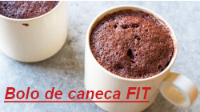

Bem-vindo(a) ao site Grandma Receitas!
Antes de mais nada, gostaríamos de saber qual é a sua comida favorita! Para isso, clique aqui e responda esta pesquisa.
Nosso site tem como objetivo mostrar a você, internauta, algumas receitas interessantes para fazer em família ou sozinho, o importante é ser feliz!

Receitas originais do site Grandma:
Clique na imagem para ir para outra página
